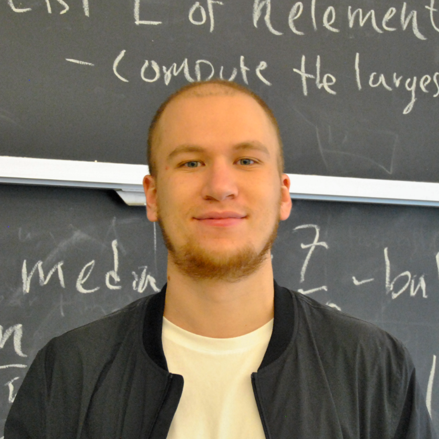

pronounced yeh-GOR
I'm a Master's student in Artificial Intelligence at ITMO University, collaborating with Mila's CERC-AAI Lab. My current interests are in foundation models, particularly their transfer across domains, and what this reveals about learned representations. I am also interested in how autonomous AI agents could support scientific research.
My background is in Physics. I completed a Master’s in Physics at Brown University, where I worked on machine learning methods for particle physics. I also have worked on reinforcement learning methods for improving the training dynamics of physics-informed neural networks.
Before joining Brown, I studied at the Faculty of Physics at Moscow State University.

Currently I'm Interested In
Projects
Compressed neural networks for jet tagging in particle physics using knowledge distillation. We achieved over 3× inference speedup and preserved strong classification performance. This work explored how smaller models can reduce computational cost in particle physics data analysis and enable faster processing.
Devpost →Developed anomaly detection pipelines for high-dimensionals data from particle physics experiments. Beyond detecting anomalous patterns, the project examined robustness, false-positive risk, and model failure modes.
GitHub →Developed reinforcement learning-based methods to adaptively control causal weighting in PINN training. Demonstrated on the Allen–Cahn equation that a single adaptive RL-driven training run could match the performance of fixed causal parameters selected through multiple training sweeps.
Timeline
2026 – Present
🇨🇦 Montréal, Canada
Research collaborator.
2025 – Present
🇷🇺 St. Petersburg, Russia
Coursework and projects in machine learning. Courses from Yandex School of Data Analysis.
2022 – 2024
🇺🇸 Providence, RI
Graduate training in physics, with coursework in deep learning and applied AI. Research assistant on machine learning projects in particle physics.
2018 – 2022
🇷🇺 Moscow, Russia
Contact
I'm open to research conversations, internships, and collaborations.
I'm based in Montréal, QC .
You can reach me at egor.d.serebriakov@gmail.com.
My CV can be found here.